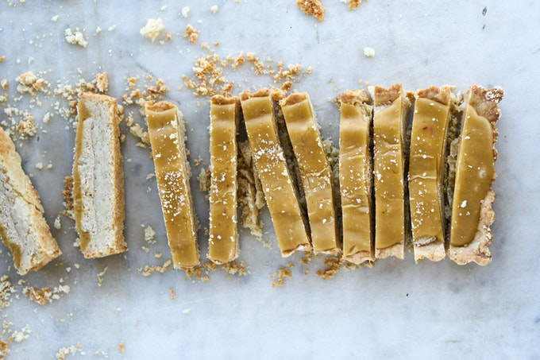

Middle Eastern Millionaire’s Shortbread

Millionaire's shortbread is traditionally made by layering shortbread, caramel, and chocolate. It's often shockingly sweet, and overly rich - even by dessert standards. This is different. Imagine a crisp, shortbread base spread thick with a creamy tahini-halva blend, finished with glossy tahini caramel. It's brilliant, and a thin slice makes for the perfect treat.
Shortbread:
Halva:
Tahini Caramel:
Preheat the oven to 400°F/200°C degrees. Line an 8-inch/20-cm square pan (or equivalent) with parchment paper, making sure the paper rises over the edge of the pan.
To make the shortbread:Sift the confectioners' sugar and cornstarch into the bowl of an electric mixer with the paddle attachment in place, then add the granulated sugar and mix on medium speed. With the machine still running, slowly pour in the melted butter and beat until combined. Add the vanilla extract and turn the speed to low, then sift in the flour and salt and continue to beat until the dough comes together. Transfer the mixture into the pan and use your hands to even out the surface. Prick all over with the tines of a fork. Bake for 25 minutes, or until golden brown. Remove from the oven and cool completely; this will take an hour or so, so don't start making the tahini caramel too soon or it will have set by the time the shortbread is cool.
To make the halvah:Place the halvah and tahini in a small bowl and mix with a wooden spoon to combine. Spread the mix over the cooled shortbread, and use the back of the spoon to smooth it into an even layer.
To make the tahini caramel:Place the sugar and water in a small saucepan over medium-low heat. Stir occasionally, until the sugar has dissolved, then increase the heat to medium-high. Bring to a boil and cook --still at a boil-- for about 12 minutes, until the sugar is a deep golden brown (for me this was close to 300°F on the candy thermometer). Remove from the heat and add the butter and cream; take care here, as the mixture will sputter. Whisk to combine and, once the butter has melted, add the tahini and salt. Whisk to combine and, then pour evenly over the halvah layer in the pan, so the all the halvah is covered.
Place in the fridge for 4 hours until set, before cutting into 16 equal bars. Sprinkle a pinch of the flaky sea salt over the middle of each bar and serve.
To serve, tip out the potatoes on to a platter and spoon the grilled salsa on top. Scatter over the spring onions and some of the pumpkin seeds (you won’t need them all, so keep any leftovers for snacking on), finish with a drizzle of olive oil and a sprinkle of sea salt, and serve warm.